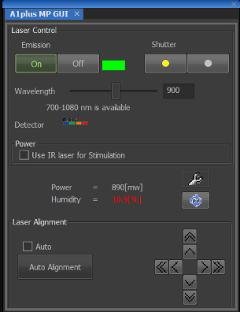
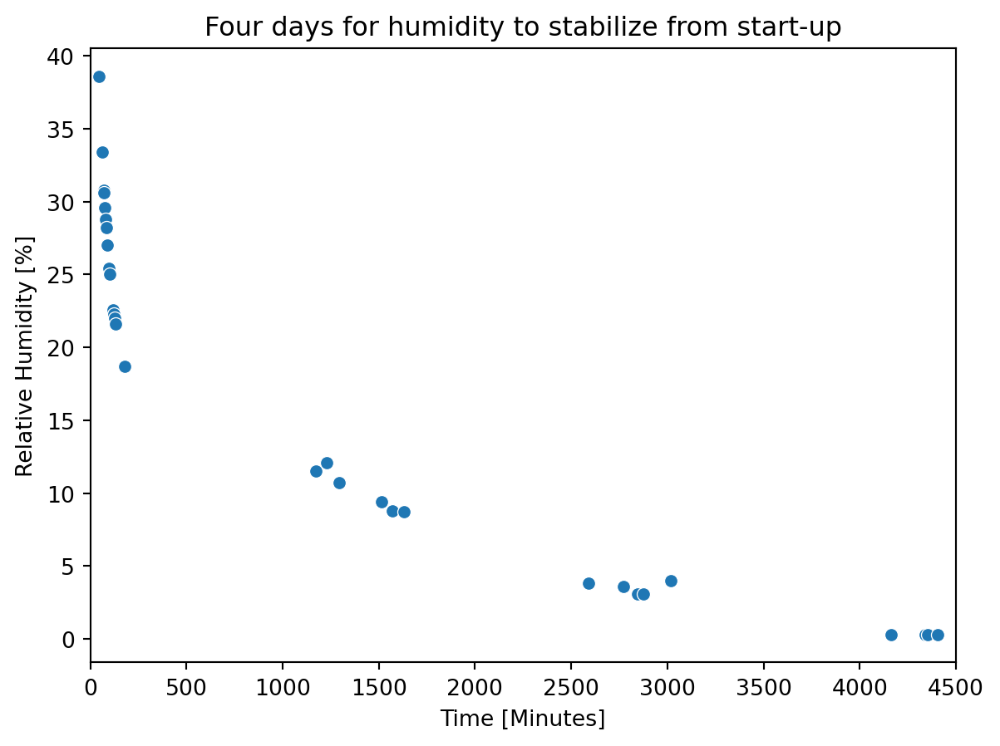
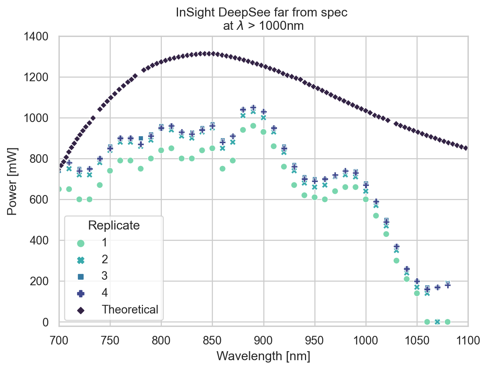

Code
import pandas as pd
import seaborn as sns
import matplotlib.pyplot as pltWilliam Giang
September 25, 2022
We thought the Nikon A1R MP’s laser system, the Spectra-Physics InSight DeepSee, was in need of repair. After contacting the service engineer for Spectra-Physics, we learned two laser diodes were already replaced with a bill of $30k. We were also warned that the laser power had been reduced, but otherwise the DeepSee should be functional.

Sept 20: Turned on all scope components and noticed humidity was too high, so I started logging it
humidity_csv = "Time_since_DeepSee_turn_on.csv"
humidity_df = pd.read_csv(humidity_csv)
humidity_plot = sns.scatterplot(data = humidity_df,
x = "Time [Minutes]",
y = "Relative Humidity [%]",
)
humidity_plot.set_title("Four days for humidity to stabilize from start-up")
humidity_plot.set_xlim(0, 4500)(0.0, 4500.0)
data_csv = "2022-09-23_laser-power-vs-wavelength_with-theoretical.csv"
df = pd.read_csv(data_csv)
palette = sns.color_palette("mako_r", 5)
sns.set_theme(style="whitegrid")
g = sns.scatterplot(data = df,
x = "Wavelength [nm]",
y = "Power [mW]",
hue = "Replicate",
style = "Replicate",
palette = palette,
)
g.set_title("InSight DeepSee far from spec \nat $\lambda$ > 1000nm")
g.set_xlim(700, 1100)
g.set_ylim(-20, 1400)(-20.0, 1400.0)
---
title: Insights into Spectra-Physics' InSight DeepSee
author: William Giang
date: "2022-09-25"
categories: [Python, analysis, lasers]
toc: true
number-sections: false
highlight-style: pygments
format:
html:
code-fold: true
code-tools: true
html-math-method: katex
pdf:
geometry:
- top=30mm
- left=20mm
docx: default
jupyter: python3
---
## Overview
We thought the Nikon A1R MP's laser system, the Spectra-Physics InSight DeepSee, was in need of repair. After contacting the service engineer for Spectra-Physics, we learned two laser diodes were already replaced with a bill of $30k. We were also warned that the laser power had been reduced, but otherwise the DeepSee should be functional.
- The liquid in the chiller unit has been flushed and replaced with coolant.
- After turning on the microscope and laser systems, it took several days for the laser's humidity to reach acceptable levels
- The power output has been reduced

```{python}
import pandas as pd
import seaborn as sns
import matplotlib.pyplot as plt
```
## How long does the InSight DeepSee need to effectively warm up?
Sept 20: Turned on all scope components and noticed humidity was too high, so I started logging it
```{python}
humidity_csv = "Time_since_DeepSee_turn_on.csv"
humidity_df = pd.read_csv(humidity_csv)
humidity_plot = sns.scatterplot(data = humidity_df,
x = "Time [Minutes]",
y = "Relative Humidity [%]",
)
humidity_plot.set_title("Four days for humidity to stabilize from start-up")
humidity_plot.set_xlim(0, 4500)
```
## How much power did we lose as a function of wavelength?
- Digitized the theoretical tuning power from the manual
- There also appears to be a warmup time after turning emission ON
- Severe drop in power when laser is tuned above 1000nm
```{python}
data_csv = "2022-09-23_laser-power-vs-wavelength_with-theoretical.csv"
df = pd.read_csv(data_csv)
palette = sns.color_palette("mako_r", 5)
sns.set_theme(style="whitegrid")
g = sns.scatterplot(data = df,
x = "Wavelength [nm]",
y = "Power [mW]",
hue = "Replicate",
style = "Replicate",
palette = palette,
)
g.set_title("InSight DeepSee far from spec \nat $\lambda$ > 1000nm")
g.set_xlim(700, 1100)
g.set_ylim(-20, 1400)
```